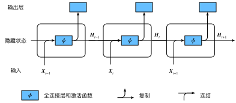
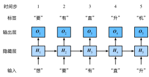

上一节介绍的$n$元语法中，时间步$t$的词$w_t$基于前面所有词的条件概率只考虑了最近时间步的$n-1$个词。如果要考虑比$t-(n-1)$更早时间步的词对$w_t$的可能影响，我们需要增大$n$。但这样模型参数的数量将随之呈指数级增长（可参考上一节的练习）。
本节将介绍循环神经网络。它并非刚性地记忆所有固定长度的序列，而是通过隐藏状态来存储之前时间步的信息。首先我们回忆一下前面介绍过的多层感知机，然后描述如何添加隐藏状态来将它变成循环神经网络。
让我们考虑一个含单隐藏层的多层感知机。给定样本数为$n$、输入个数（特征数或特征向量维度）为$d$的小批量数据样本$\boldsymbol{X} \in \mathbb{R}^{n \times d}$。设隐藏层的激活函数为$\phi$，那么隐藏层的输出$\boldsymbol{H} \in \mathbb{R}^{n \times h}$计算为
$$\boldsymbol{H} = \phi(\boldsymbol{X} \boldsymbol{W}_{xh} + \boldsymbol{b}_h),$$
其中隐藏层权重参数$\boldsymbol{W}_{xh} \in \mathbb{R}^{d \times h}$，隐藏层偏差参数 $\boldsymbol{b}_h \in \mathbb{R}^{1 \times h}$，$h$为隐藏单元个数。上式相加的两项形状不同，因此将按照广播机制相加（参见“数据操作”一节）。把隐藏变量$\boldsymbol{H}$作为输出层的输入，且设输出个数为$q$（如分类问题中的类别数），输出层的输出为
$$\boldsymbol{O} = \boldsymbol{H} \boldsymbol{W}_{hq} + \boldsymbol{b}_q,$$
其中输出变量$\boldsymbol{O} \in \mathbb{R}^{n \times q}$, 输出层权重参数$\boldsymbol{W}_{hq} \in \mathbb{R}^{h \times q}$, 输出层偏差参数$\boldsymbol{b}_q \in \mathbb{R}^{1 \times q}$。如果是分类问题，我们可以使用$\text{softmax}(\boldsymbol{O})$来计算输出类别的概率分布。
现在我们考虑输入数据存在时间相关性的情况。假设$\boldsymbol{X}t \in \mathbb{R}^{n \times d}$是序列中时间步$t$的小批量输入，$\boldsymbol{H}_t \in \mathbb{R}^{n \times h}$是该时间步的隐藏变量。与多层感知机不同的是，这里我们保存上一时间步的隐藏变量$\boldsymbol{H}{t-1}$，并引入一个新的权重参数$\boldsymbol{W}_{hh} \in \mathbb{R}^{h \times h}$，该参数用来描述在当前时间步如何使用上一时间步的隐藏变量。具体来说，时间步$t$的隐藏变量的计算由当前时间步的输入和上一时间步的隐藏变量共同决定：
$$\boldsymbol{H}t = \phi(\boldsymbol{X}_t \boldsymbol{W}{xh} + \boldsymbol{H}{t-1} \boldsymbol{W}{hh} + \boldsymbol{b}_h).$$
与多层感知机相比，我们在这里添加了$\boldsymbol{H}{t-1} \boldsymbol{W}{hh}$一项。由上式中相邻时间步的隐藏变量$\boldsymbol{H}t$和$\boldsymbol{H}{t-1}$之间的关系可知，这里的隐藏变量能够捕捉截至当前时间步的序列的历史信息，就像是神经网络当前时间步的状态或记忆一样。因此，该隐藏变量也称为隐藏状态。由于隐藏状态在当前时间步的定义使用了上一时间步的隐藏状态，上式的计算是循环的。使用循环计算的网络即循环神经网络（recurrent neural network）。
循环神经网络有很多种不同的构造方法。含上式所定义的隐藏状态的循环神经网络是极为常见的一种。若无特别说明，本章中的循环神经网络均基于上式中隐藏状态的循环计算。在时间步$t$，输出层的输出和多层感知机中的计算类似：
$$\boldsymbol{O}t = \boldsymbol{H}_t \boldsymbol{W}{hq} + \boldsymbol{b}_q.$$
循环神经网络的参数包括隐藏层的权重$\boldsymbol{W}{xh} \in \mathbb{R}^{d \times h}$、$\boldsymbol{W}{hh} \in \mathbb{R}^{h \times h}$和偏差 $\boldsymbol{b}h \in \mathbb{R}^{1 \times h}$，以及输出层的权重$\boldsymbol{W}{hq} \in \mathbb{R}^{h \times q}$和偏差$\boldsymbol{b}_q \in \mathbb{R}^{1 \times q}$。值得一提的是，即便在不同时间步，循环神经网络也始终使用这些模型参数。因此，循环神经网络模型参数的数量不随时间步的增加而增长。
图6.1展示了循环神经网络在3个相邻时间步的计算逻辑。在时间步$t$，隐藏状态的计算可以看成是将输入$\boldsymbol{X}t$和前一时间步隐藏状态$\boldsymbol{H}{t-1}$连结后输入一个激活函数为$\phi$的全连接层。该全连接层的输出就是当前时间步的隐藏状态$\boldsymbol{H}t$，且模型参数为$\boldsymbol{W}{xh}$与$\boldsymbol{W}{hh}$的连结，偏差为$\boldsymbol{b}_h$。当前时间步$t$的隐藏状态$\boldsymbol{H}_t$将参与下一个时间步$t+1$的隐藏状态$\boldsymbol{H}{t+1}$的计算，并输入到当前时间步的全连接输出层。

我们刚刚提到，隐藏状态中$\boldsymbol{X}t \boldsymbol{W}{xh} + \boldsymbol{H}{t-1} \boldsymbol{W}{hh}$的计算等价于$\boldsymbol{X}t$与$\boldsymbol{H}{t-1}$连结后的矩阵乘以$\boldsymbol{W}{xh}$与$\boldsymbol{W}{hh}$连结后的矩阵。接下来，我们用一个具体的例子来验证这一点。首先，我们构造矩阵X、W_xh、H和W_hh，它们的形状分别为(3, 1)、(1, 4)、(3, 4)和(4, 4)。将X与W_xh、H与W_hh分别相乘，再把两个乘法运算的结果相加，得到形状为(3, 4)的矩阵。
```{.python .input n=1} from mxnet import nd
X, W_xh = nd.random.normal(shape=(3, 1)), nd.random.normal(shape=(1, 4)) H, W_hh = nd.random.normal(shape=(3, 4)), nd.random.normal(shape=(4, 4)) nd.dot(X, W_xh) + nd.dot(H, W_hh)
将矩阵`X`和`H`按列（维度1）连结，连结后的矩阵形状为(3, 5)。可见，连结后矩阵在维度1的长度为矩阵`X`和`H`在维度1的长度之和（$1+4$）。然后，将矩阵`W_xh`和`W_hh`按行（维度0）连结，连结后的矩阵形状为(5, 4)。最后将两个连结后的矩阵相乘，得到与上面代码输出相同的形状为(3, 4)的矩阵。
```{.python .input n=2}
nd.dot(nd.concat(X, H, dim=1), nd.concat(W_xh, W_hh, dim=0))
最后我们介绍如何应用循环神经网络来构建一个语言模型。设小批量中样本数为1，文本序列为“想”“要”“有”“直”“升”“机”。图6.2演示了如何使用循环神经网络基于当前和过去的字符来预测下一个字符。在训练时，我们对每个时间步的输出层输出使用softmax运算，然后使用交叉熵损失函数来计算它与标签的误差。在图6.2中，由于隐藏层中隐藏状态的循环计算，时间步3的输出$\boldsymbol{O}_3$取决于文本序列“想”“要”“有”。 由于训练数据中该序列的下一个词为“直”，时间步3的损失将取决于该时间步基于序列“想”“要”“有”生成下一个词的概率分布与该时间步的标签“直”。

因为每个输入词是一个字符，因此这个模型被称为字符级循环神经网络（character-level recurrent neural network）。因为不同字符的个数远小于不同词的个数（对于英文尤其如此），所以字符级循环神经网络的计算通常更加简单。在接下来的几节里，我们将介绍它的具体实现。